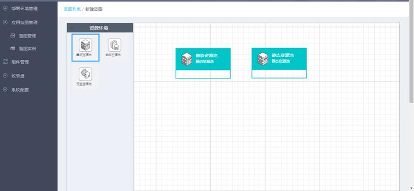
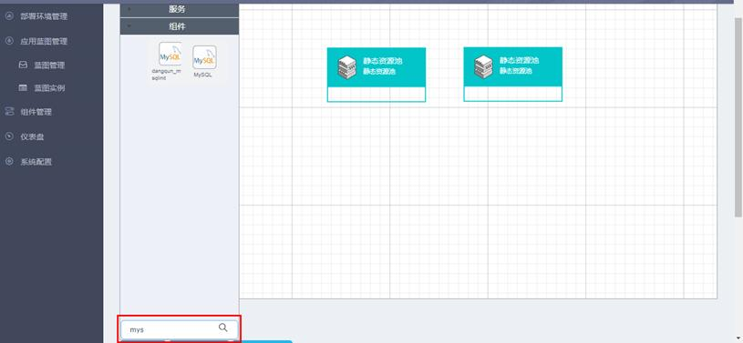
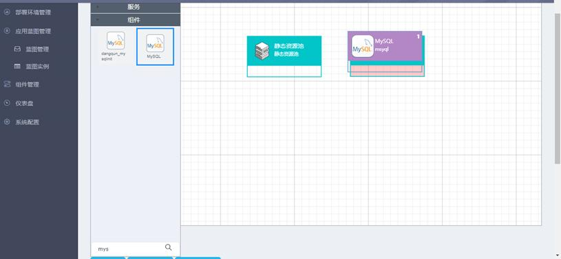
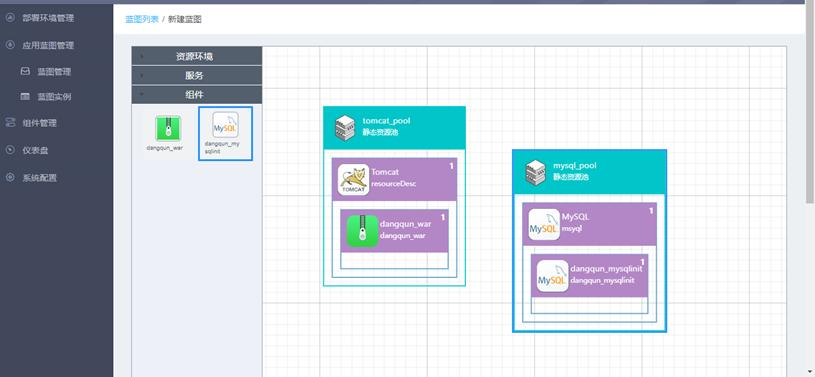
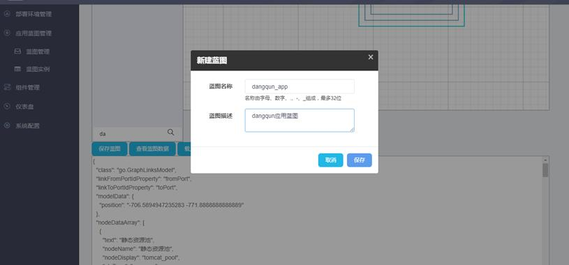

下面以一个Web应用的典型场景为例来说明蓝图设计器的操作过程。该web应用共需要Tomcat，dangqun应用，Mysql及dangqun应用初始化数据库脚本4个组件，其中应用和数据库分别部署在两个资源池中。
1. 从左侧工具栏拖动两个资源池到蓝图画板中。双击描述标签可修改资源池描述，便于区分不同资源池：

2. 组件提供搜索功能用于快速定位所需组件：

拖动组件到资源池中，当资源池背景色改变时松开鼠标，组件即添加到该资源池中。鼠标左键单击选中资源池或组件，按Delete键可以删除。

3. 继续拖动其它组件到资源池中，组件支持嵌套。双击资源池名称、描述以及组件名称、描述可以修改相关信息，以增加蓝图可读性。

4. 蓝图模板绘制完成后，点击“保存蓝图”按钮，在弹出的窗口中输入蓝图名称、蓝图描述，点击“保存”，该蓝图模板即保存成功。

蓝图模板绘制说明：
|
1、鼠标左键单击资源池拖拽，可以将资源池拖拽到画板中； 2、鼠标左键单击组件拖拽到资源池上方松开左键，可以将组件拖拽到资源池中； 3、组件必须放置于资源池中，可以并列也可以嵌套； 4、鼠标左键单击选中资源池或组件，按Delete键可删除该资源池或组件； 5、鼠标左键双击资源池或组件描述，可以修改描述信息以增加可读性。 |